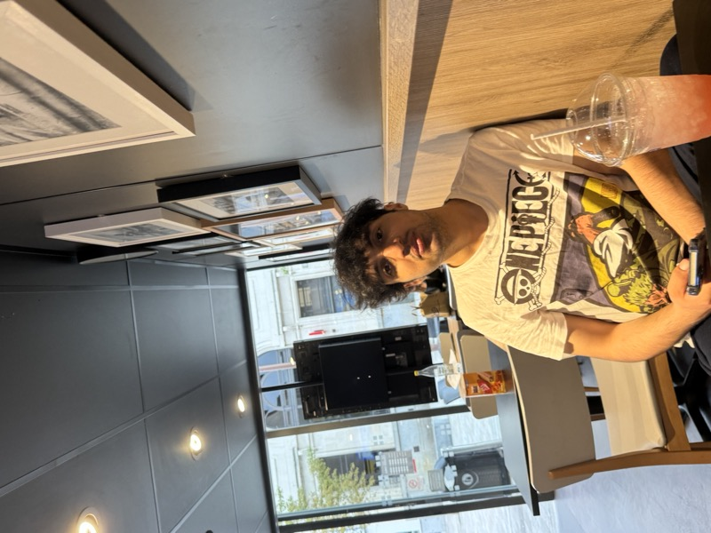

Associate Business Analyst (Client-Focused) · Stakeholder Management · Requirements & Process Improvement
Business Analyst–oriented Software Developer with a First-Class Computer Science degree. Skilled in requirements elicitation, process mapping, solution design, and Agile delivery. I translate business needs into structured, measurable solutions that improve efficiency and user engagement.
Bridging business stakeholders and engineering teams across operational and client-facing platforms.

Business Analyst–oriented Software Developer with a First-Class Computer Science degree and strong experience bridging business stakeholders and engineering teams. Skilled in requirements elicitation, process mapping, solution design, and Agile delivery across operational and client-facing platforms.
Recent highlights: 10+ stakeholder workshops, 50+ requirements documented, 80+ user stories with acceptance criteria, 6+ AS-IS/TO-BE process mappings, 95%+ sprint acceptance rate. Reduced document search time by 50–80% for 10–12 staff. Prior roles include Student Digital Leader (200+ students), Student Support Assistant (50–70 students/week), and Research Assistant Intern (1,000+ data points analysed).
BSc (Hons) CS
BA & Stakeholders
United Kingdom 🇬🇧
Letterbox Distribution
University of Huddersfield
National Institute of Technology Srinagar
Study Group
University of Huddersfield
Requirements elicitation, process mapping, solution design, and Agile delivery—bridging business stakeholders and engineering teams.
Jira · Confluence · Miro · Lucidchart · Agile / Scrum · MoSCoW Prioritisation · Backlog Refinement
Technical fluency (to collaborate with developers)
Selected work where I led or contributed to business analysis, requirements, process design, and stakeholder engagement—focus on problem, stakeholders, constraints, and outcome.
Business problem: Councils needed a centralised platform for operations and resident engagement.
Stakeholders: Council clients, operations, delivery team.
Constraints: Scope, time, and integration with existing processes.
My role: Requirements gathering, process mapping, gap analysis, trade-off analysis; bridge between business and build.
Outcome: Platform in production; streamlined workflows and improved engagement. Letterbox Distribution.
Business problem: Scattered information and tools; staff spent time searching for documents and resources.
Stakeholders: Internal operations, multiple teams.
Constraints: Time and existing tooling.
My role: Process analysis, gap identification, requirements and solution structure; acted as bridge between operations and delivery.
Outcome: Single point of truth for 10–12 staff; reduced time spent locating documents by an estimated 50–80%. Letterbox Distribution.
Business problem: Students need to extract value from large volumes of academic content.
Stakeholders: End users (students), product owner.
My role: Requirements, user stories, and solution structure; prioritisation and scope trade-offs.
Outcome: In progress—focused on learning efficiency and reduced manual effort.
Business problem: Users overwhelmed by content choice; need relevant recommendations.
Stakeholders: End users, product context.
My role: Problem definition, success criteria, and systems analysis for recommendation logic.
Outcome: Structured approach to recommendation quality and engagement; used for data/analytics insight.
Focus: Systems analysis and solution design for APIs and integration patterns; understanding of technical constraints to inform business and developer dialogue.
Music fuels my creativity and keeps me focused while working. Here's what I'm currently listening to.
Seeking client-focused roles where I can apply business analysis, stakeholder management, and process improvement:
Interested in Associate Business Analyst, Business Analyst (client-focused), and Digital Transformation roles. Open to collaboration and new opportunities—reach out anytime.